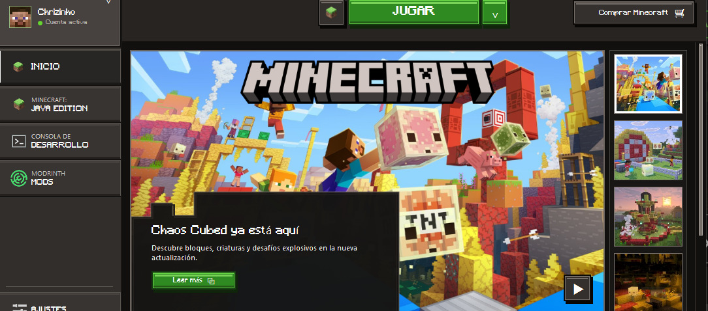
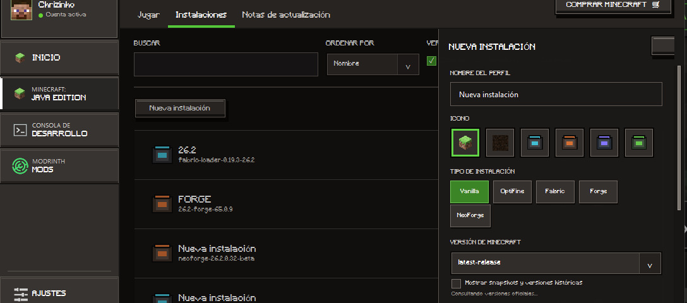
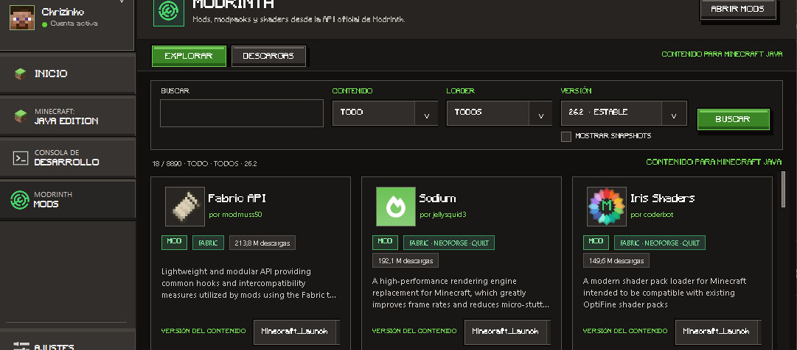
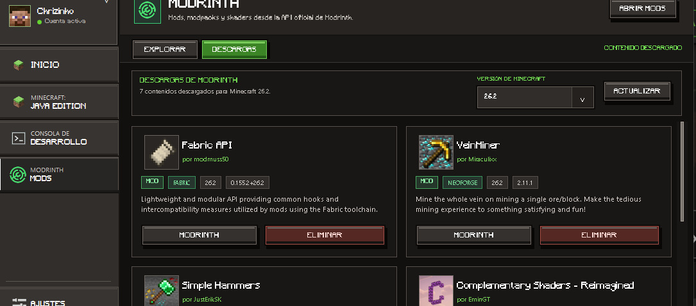
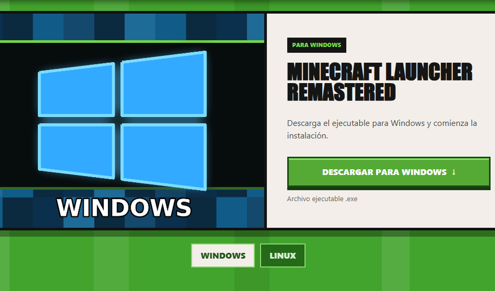
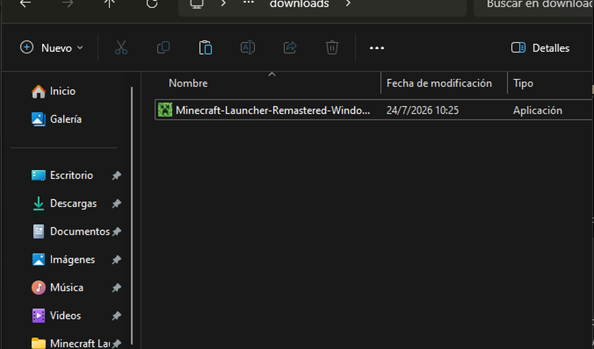
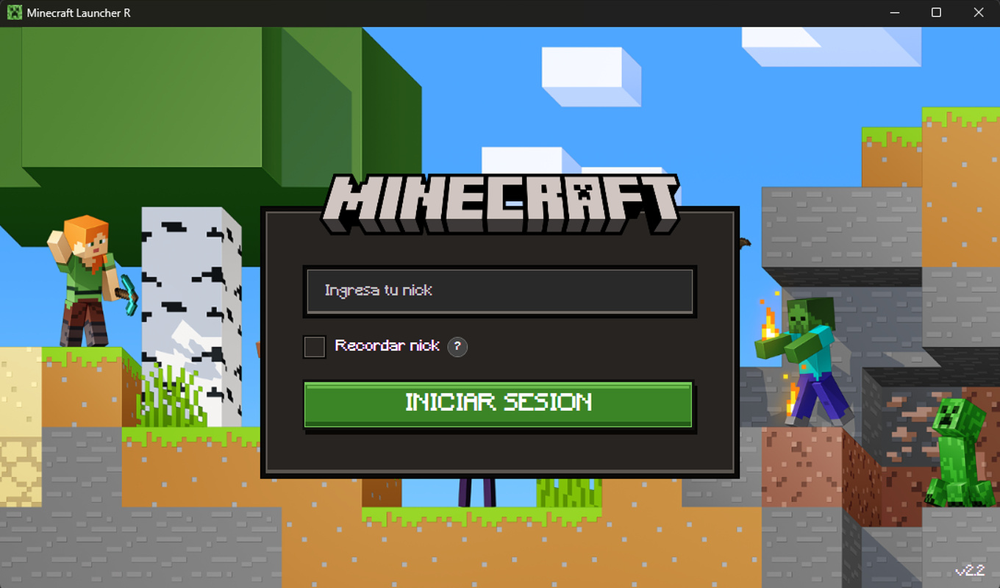
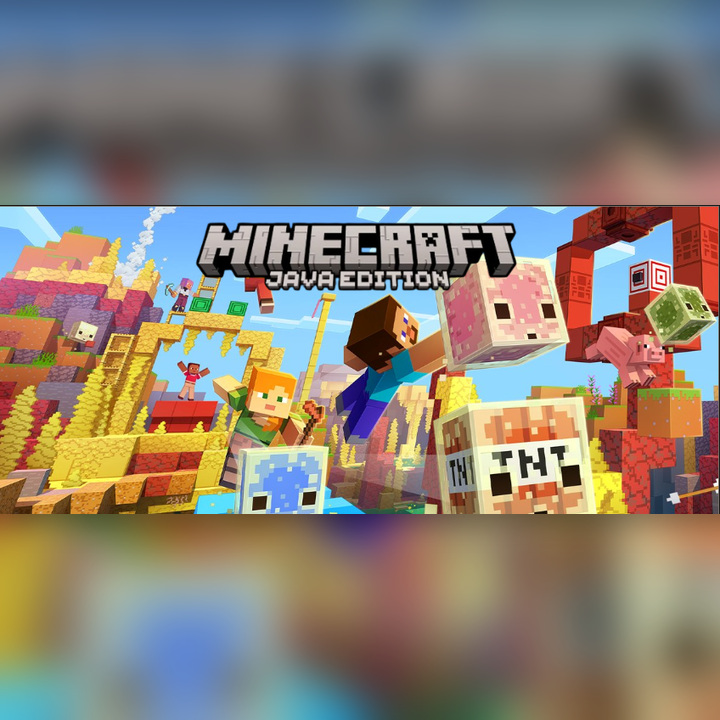
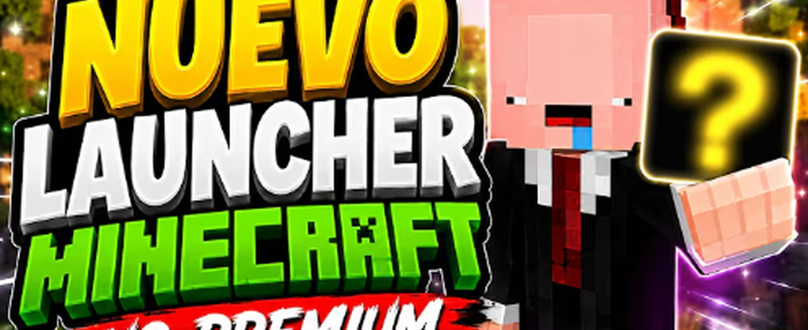
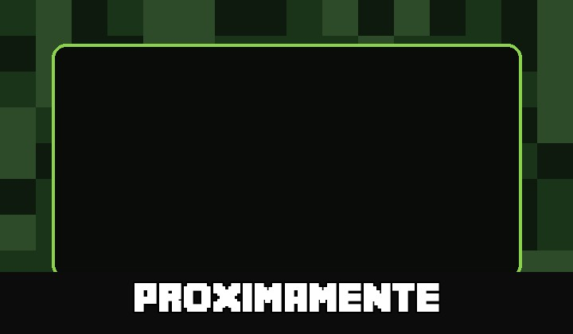

MINECRAFT LAUNCHER REMASTERED
TODO LO QUE NECESITAS PARA TU
EXPERIENCIA MINECRAFT
Descubre herramientas, descargas e información útil para disfrutar Minecraft con una experiencia moderna, clara y organizada.



LISTO PARA EMPEZAR
EMPIEZA EN POCOS PASOS
Descarga el ejecutable, completa la instalación y abre Minecraft Launcher Remastered.



WINDOWS Y LINUX
DESCARGA MINECRAFT LAUNCHER REMASTERED
Usa las flechas para cambiar de plataforma y descargar el ejecutable.
INFORMACION
DESCUBRE EL PROYECTO
Conoce las novedades, la historia del launcher y las formas de apoyar su desarrollo.

ACTUALIZACION
Revisa todo lo añadido, mejorado, solucionado o eliminado.

ACERCA DE MINECRAFT LAUNCHER REMASTERED
Descubre el objetivo, las funciones y la identidad del proyecto.

APOYA EL PROYECTO
Tu apoyo ayuda a mantener y mejorar Minecraft Launcher Remastered.
APOYAR EN PAYPAL ↗CHRISCODE+
REDES SOCIALES
Sigue el desarrollo, conoce las novedades y encuentra el código del proyecto.


